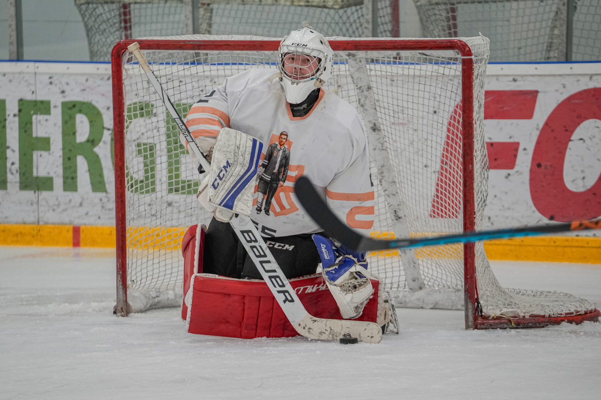
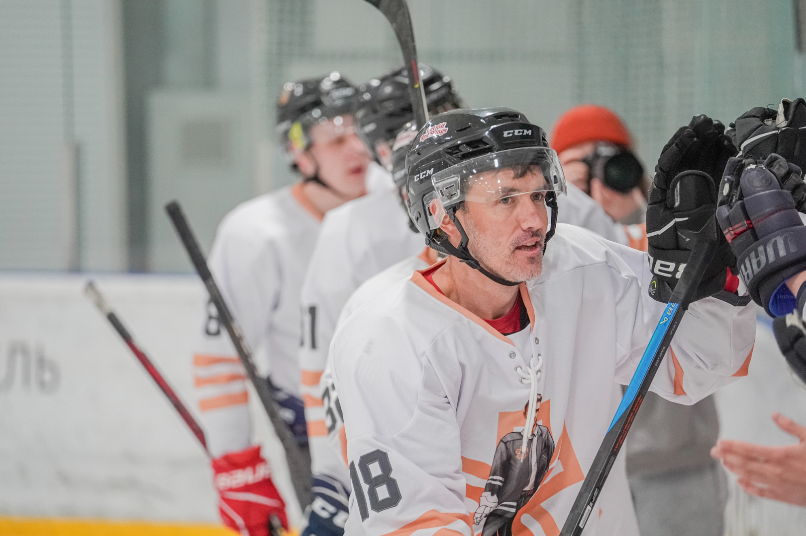
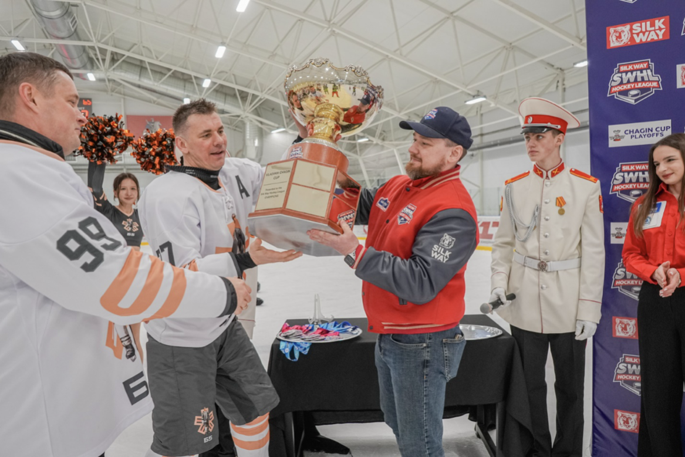
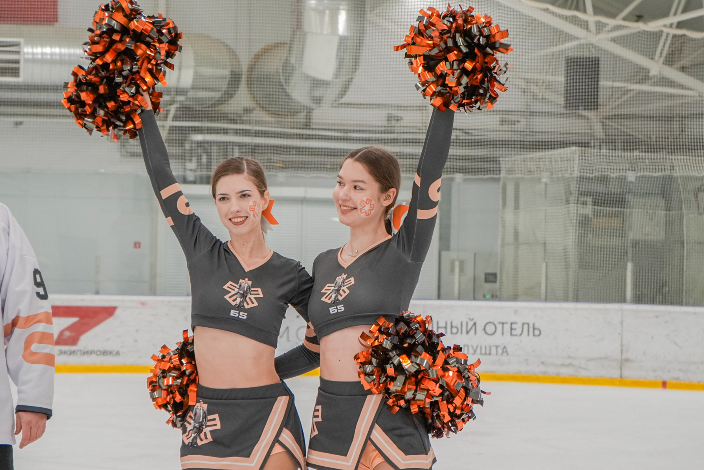

Есть матчи, которые заканчиваются свистком судьи. А есть те, что начинают новую спортивную главу. И один из них — Б5 (Омега) vs HB HDCR. 27 апреля 2025 года любительская хоккейная команда Б5 (Омега) изменила ход событий в Silk Way Hockey League, завоевав первый в истории Кубок Чагина, за которым стоял целый год пути.
Команда, ещё недавно находившаяся в тени призёров регулярного чемпионата 24/25 SWHL (не хватило одного очка до тройки лидеров), словно раскрывшийся в нужный момент парус, поймала попутный ветер плей-офф и разогналась без оглядки до победного матча. На табло к финальной сирене горели цифры, которые не требуют комментариев: 7:0.
За этим результатом — не только спортивная работа, но и слаженное партнёрство. С первого дня рядом с хоккейной машиной Б5, смена за сменой, шла Б5Групп — компания, которая поддерживала не по формальности, а по убеждению. Участие чувствовалось на каждом этапе становления — создавалась среда, в которой росла уверенность, формировался характер и выстраивалась основа для сильной, слаженной игры.

Финал, в котором характер стал важнее, чем турнирная таблица
Финал ожидался жёстким и непредсказуемым. Две команды, две философии игры. Оба соперника прошли долгий путь к последнему матчу турнира, оба знали цену каждой ошибке. Но с первых минут стало ясно: Б5 (Омега) приехала за Кубком не просто с настроем, а с внутренним спокойствием людей, которые точно знают, зачем они здесь.
Атакующие звенья Б5 работали в высочайшем темпе, шайбы влетали в ворота HB HDCR c точностью часового механизма, защита действовала хладнокровно, а вратарь отбивал броски, будто заранее знал их траекторию. 56% владение шайбой, 43 броска по воротам, 34 вбрасывания из 59 выиграно. Ворота соперника казались приглашением к продолжению красивой хоккейной истории: один за другим туда ложились результативные броски.
Семь шайб стали семью чистыми нотами в партитуре триумфа Б5 — каждая выверенная, каждая точная, каждая прозвучавшая в свой момент.
Дорога Б5 (Омега) к финалу Кубка была выложена проверками на прочность
Хоккейная команда Б5 (Омега) прошла насыщенный и напряжённый сезон 2024/25 в Silk Way Hockey League, завершив его исторической победой в Кубке Чагина. За плечами — 28 игр, 20 побед и 138 заброшенных шайб. Средняя результативность: 4,9 шайбы за игру. Заработав 58 очков, стали четвертыми в турнирной таблице регулярного чемпионата. Четвертьфинал плей-офф Кубка Чагина принёс уверенные победы над Silk Way Star (4:1 и 6:1), но лёгкой прогулкой путь не был.
Каждая победа требовала дисциплины, концентрации и умения брать ответственность на себя. Полуфинал: противостояние с Hockey Dads — настоящая шахматная партия на льду. Первая победа (3:2), тяжёлое поражение (0:3), и решающий третий матч, где каждая секунда казалась вечностью. В овертайме всё решил один бросок.
Юрий Жирков, ключевой бомбардир любительской хоккейной Лиги SWHL, словно мастер-каллиграф, вывел на льду самую дорогую подпись сезона — золотую шайбу, которая отправила Б5 в финал.

Кубок Чагина: символ силы и мужества
Кубок Чагина был учреждён в честь Владимира Чагина — легендарного российского автогонщика, семикратного победителя «Ралли Дакар», известного как «Царь Дакара». Этот трофей — символ мужества, преодоления, мастерства и командной работы. Трофей создан вручную из ценных пород дерева, украшен антикварной серебряной чашей и отличается элегантным силуэтом, в котором нет случайных деталей. И теперь на его основании первым будет выгравировано имя Б5.

И это большая ответственность: быть первыми в истории.
Победа, которую строят не только на льду
Путь к этой победе начался задолго до стартового вбрасывания. Почти год кропотливой работы, тренировок после работы, разговоров в раздевалке, смен тактики, преодоления травм и сомнений. Команда скользила по календарю чемпионата не по прямой дороге, а по сложному маршруту, где каждое усилие приближало к главному матчу сезона.
Рядом с Б5 (Омега) клюшка об клюшку двигалась к цели IT-компания Б5Групп — спонсор команды, союзник, для которого слаженная работа и стремление к развитию стали неотъемлемой частью собственного ДНК. Поддержка ощущалась не в отдельных эпизодах, а в общем темпе — в организации тренировок, в логистике, в внимании к мелочам, от которых зависит общий результат.
Когда бизнес говорит со спортом на одном языке — языке стратегии, усилий и взаимного уважения — возникает целое, способное выдержать любые нагрузки. И именно в таком союзе рождаются истории, которые заканчиваются поднятым над головой кубком.

«На льду, как и в бизнесе, выигрывают команды. Там, где есть доверие, синхронизация усилий и готовность поддерживать друг друга. Сегодня Б5 (Омега) доказала это на деле. Мы гордимся нашими ребятами и верим, что это начало большой истории».
Для Б5Групп спорт — не отвлечение от работы, а её продолжение в другой плоскости. Это способ формировать характер, развивать выносливость, учиться принимать решения в движении. В хоккее, как и в деле, важны темп, расчёт и ответственность за партнёра.